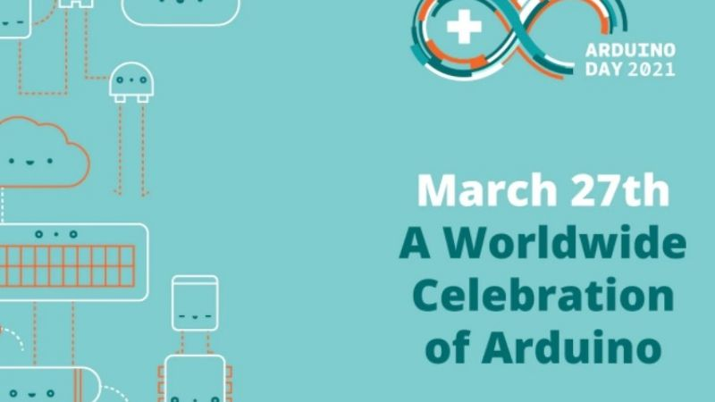
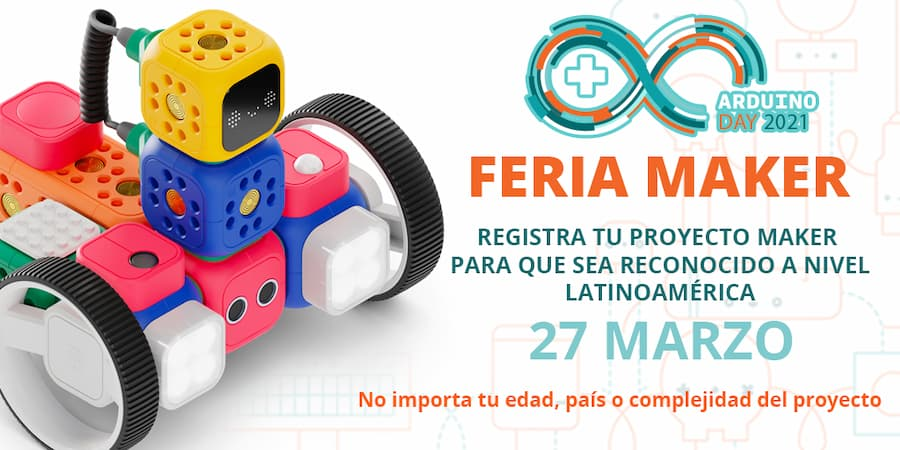

Río Gallegos es sede oficial en Argentina: arrancó el Arduino Day 2021
Esta tarde se dio inicio, en forma virtual, este evento virtual donde se exponen los proyectos basados en la placa Arduino. Es organizado por Zimatech en conjunto con la Club de Ciencias del Industrial N° 6 y Robótica Patagonia.
A partir de hoy y durante la jornada de mañana se desarrolla de manera virtual un nuevo «Arduino Day», la fecha que congrega a programadores de todo el mundo para festejar el nacimiento de la placa que cambió el mundo de la programación y la robótica. Uno de los principales eventos se hará desde la ciudad de Río Gallegos.
Esta nueva edición del Día Arduino contará con 24 expositores, en su mayoría argentinos pero otros procedentes de países como Venezuela y El Salvador, y se transmitirá a través de la plataforma creada para la Exposición de Ciencia y Tecnología (Expocytar) del año pasado.

Esta va a ser la séptima edición del Día Arduino que organiza el Club de Ciencias patagónico, que en realidad corresponde a la del año pasado, que debió suspenderse porque una semana antes se decretó en nuestro país el Aislamiento Social Preventivo y Obligatorio en todo el país.
Esta nueva edición del Día Arduino contará con 24 expositores, en su mayoría argentinos pero otros procedentes de países como Venezuela y El Salvador, y se transmitirá a través de la plataforma creada para la Exposición de Ciencia y Tecnología (Expocytar) del año pasado.
Esta va a ser la séptima edición del Día Arduino que organiza el Club de Ciencias patagónico, que en realidad corresponde a la del año pasado, que debió suspenderse porque una semana antes se decretó en nuestro país el Aislamiento Social Preventivo y Obligatorio en todo el país.